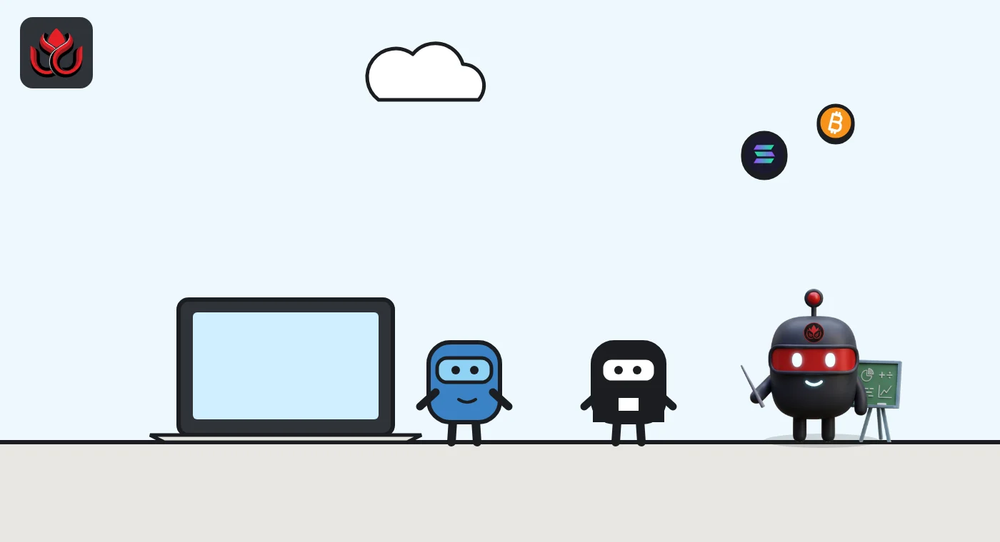
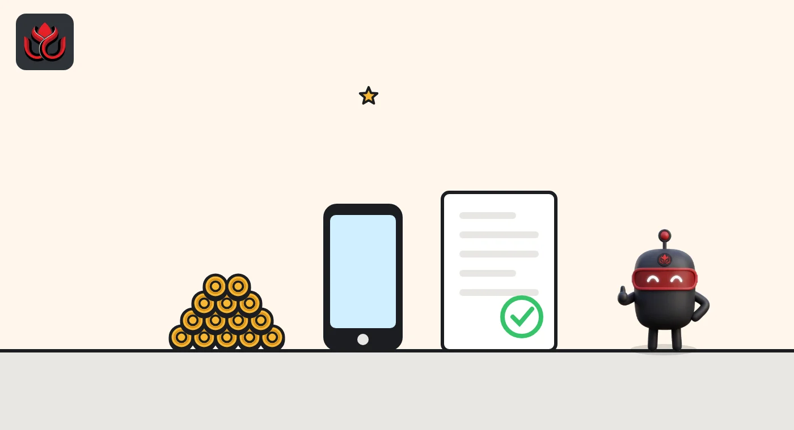

Code is not a shield: the FCA's draft crypto map covers DeFi, comments due November 18
The UK regulator wants views by November 18, 2026, on draft guidance about when DeFi, stablecoin payments, market making and tech services need a license. Using smart contracts does not settle the question on its own.
Key points
- The FCA published Consultation Paper CP26/36 in October 2026. It closes on November 18, 2026, and final guidance is expected in spring 2027.
- On DeFi, the FCA says software, smart contracts or DAO-style voting do not by themselves decide whether a regulated activity is happening. Each person's role is judged.
- The draft also explains the new "UK qualifying stablecoin" idea, exclusions for own-account trading and market makers, and a narrow exclusion for purely technical services.
What the FCA published
The UK Financial Conduct Authority (FCA) published Consultation Paper CP26/36 in October 2026, with draft guidance on where the line falls between regulated and unregulated crypto activity. Comments are due by November 18, 2026.
The draft would amend the FCA's Perimeter Guidance manual (PERG), the part of its rulebook that helps firms work out whether they need permission for what they do. It follows a second set of government changes to the crypto regulations, the Cryptoassets Amendment Regulations, which were laid the day before the FCA's September guidance. Those amendments added new exclusions and a new concept of a "UK qualifying stablecoin".
This is not a rewrite of the map the FCA issued in September in PS26/18, which LC Insight covered at the time. The FCA says the two should be read together. It also reminds firms that it "does not have the power to change the perimeter." Only the government's legislation sets it. The FCA's job is to explain how the law applies.
DeFi: the FCA judges roles, not labels
The chapter likely to draw the most attention is on decentralization. In the FCA's draft, using software, smart contracts or DAO-style governance, where token holders vote on changes, does not by itself decide whether someone is carrying on a regulated activity. Each person involved is assessed on their own role.
In plain terms, calling a service decentralized will not end the analysis. A team that runs a front end, controls key settings or arranges trades for users could still need a license, depending on what it actually does.
A separate chapter covers a technical services exclusion. Firms that only provide non-discretionary technical access to a third-party service or a decentralized protocol may fall outside the permission for arranging deals. The FCA stresses this is not a general exclusion for anything that involves technology.

Stablecoins and payments
The draft explains what a UK qualifying stablecoin is: one issued by an authorized issuer as part of the regulated issuing activity. It sets out how stablecoins differ from electronic money, with a list of indicative features, and describes exclusions from dealing and arranging for certain transfers and exchanges.
New safeguarding exclusions cover temporary holdings during settlement, the backing assets of UK stablecoins, stablecoins held briefly to make payments, and some arrangements with central securities depositories.
This ties in with government policy. In September, the government laid targeted amendments to give stablecoin payment providers more certainty, and it is consulting on bringing UK-issued stablecoins inside the payment services rules, the Economic Secretary to the Treasury said on October 6.
When traders and market makers are excluded
Another chapter deals with proprietary trading. Trading on your own account, where no service is provided to another person, can fall outside the permission for dealing. The FCA generally sees a service where the other side is a retail investor, a fee is charged or the firm holds itself out as a liquidity provider. Market makers on a qualifying crypto trading platform may also be excluded. This matters for trading firms that provide liquidity on exchanges but do not serve retail customers.
The paper also proposes changes to the financial promotions guidance in PERG 8, which covers when crypto marketing is caught by the rules.

Timeline
FCA publishes final perimeter guidance in PS26/18
Application window for the new UK crypto regime opens
FCA publishes CP26/36 on further perimeter guidance
Consultation closes
Final guidance expected
Broad range of crypto activities comes inside the FCA's perimeter
What happens next
After the consultation closes on November 18, the FCA expects to publish final text in spring 2027. That is months before the regime goes live on October 25, 2027, the start date for the new regulated activities set out by HM Treasury.
For firms already preparing applications, the timing is awkward. They must decide which permissions to ask for while parts of the guidance on DeFi, market making and stablecoin payments are still in draft.
LC Insight analysis
This section is our reading of the facts above, not a statement of fact.
- We think the DeFi chapter will matter most. By judging each person's role instead of the label on the protocol, the FCA keeps front-end operators and teams that hold admin keys in view while leaving room for genuinely hands-off software.
- The technical services exclusion is narrow by design. The likely result is that wallet and interface providers will need careful legal analysis of what they control, not a blanket answer.
- The stablecoin exclusions point to a UK plan in which regulated stablecoins can move through payments without every intermediary needing a full crypto license. How the government's payments consultation ends will decide how far that goes.
What's next
- Industry responses before the November 18, 2026, deadline, especially on DeFi front ends
- The final perimeter guidance expected in spring 2027
- The government's payments consultation on UK-issued stablecoins
Disclaimer. This article is based on public information and the sources listed below as of the update time shown. It is for information only and is not investment, legal or tax advice. Figures may change as companies and authorities publish new data.